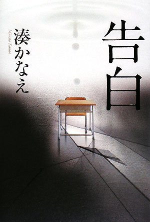
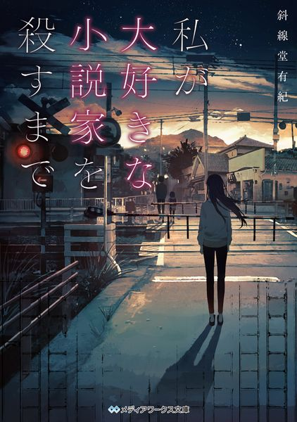

販売ページ
ここでは、私がおすすめしたい小説を紹介します。 趣味で紹介した本以外のおすすめも掲載しています。 気になるものがあれば、ぜひチェックしてみてください。
神様のカルテ

白鳥とコウモリ

告白

教師の森口が「娘を殺したのはこのクラスの生徒だ」と告白し、すでに復讐を始めていることを明かしたことで、関係者の視点から真相と闇が暴かれていく物語
私が大好きな小説化を殺すまで

失踪した小説家と、彼を支え続ける少女の“歪んだ共依存”が、やがて少女が小説家を殺す理由へつながっていく物語。